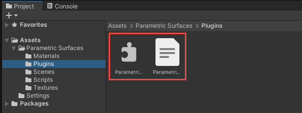
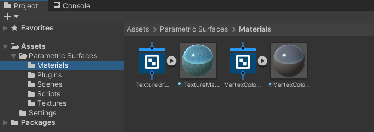
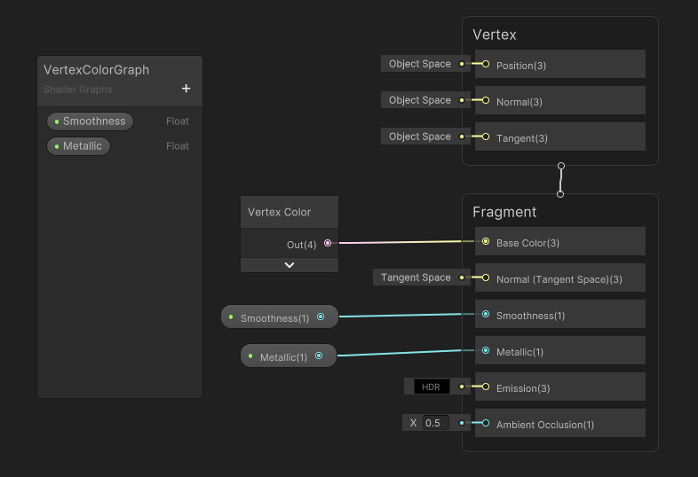
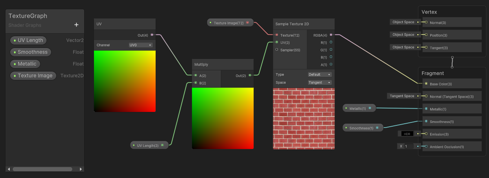
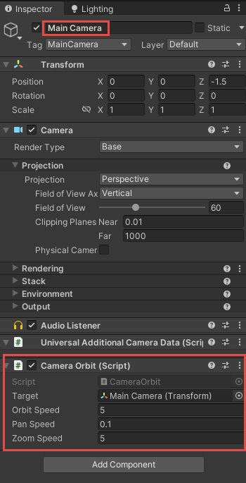

Get Started
Import Library
To utilize the ParametricSurfacesLib library, you need to import it into your Unity project. Simply open the Asset Store window and import the Parametric Surfaces library package. The library can be found in the Parametric Surfaces/Plugins folder:

Within the folder, you will find two files: ParametricSurfacesLib.dll and ParametricSurfacesLib.xml. The former is the class library file, while the latter is the xml file used for IntelliSense in Visual Studio. In practice, your Unity project only requires these two files to create parametric 3D surface plots. You can place these two files within your project wherever you prefer, but ensure they are placed in the same folder.
Materials (Optional)
To test the library, you'll need to utilize a material that supports vertex color. Within the Parametric Surfaces/Materials folder, we've created two shaders using Shader Graph, one named VertexColorGraph and the other TextureGraph. These shaders are then used to define two materials: VertexColorMaterial and TextureMaterial, as illustrated in the following image:

The image below displays the VertexColorGraph.

This graph simply passes the vertex color to the fragment shader. Additionally, we expose two properties, smoothness and metallic, enabling users to easily adjust these properties in the Inspector.
The TextureGraph becomes more intricate, as depicted in the following image.

This graph exposes four properties: smoothness, metallic, UV Length and Texture Image. The UV Length is of type Vector2, allowing users to repeat the image texture along the U and V directions, while the TextureImage property enables users to select different image textures.
In the Parametric Surfaces/Textures folder, we've included several images that you can use to test the texture mapping on parametric surfaces.
Camera Control (Optional)
The Parametric Surfaces/Scripts folder contains a CameraOrbit.cs file. This file can be attached to the MainCamera object in a scene, as shown in the following image:

This allows you to rotate, pan, and zoom the GameObject with your mouse in the game play mode. This camera control is optional, you can use whatever camera you like.
With this preparation and setup, we'll show you how to use the ParametricSurfacesLib library to create several demo examples in the following sections.